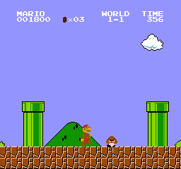
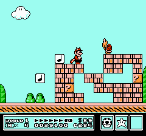
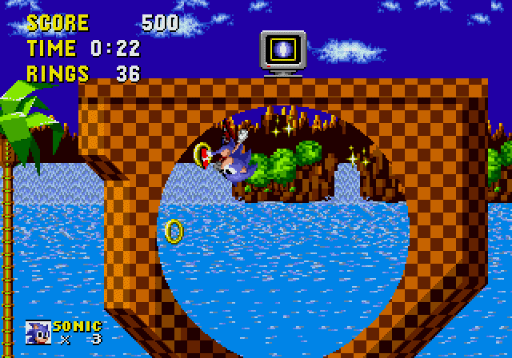

The platform games genre
A subgenre of action games, platform games (often simplified as "platformers") seem easy to identify thanks to their defining gameplay: moving and jumping on and from platforms (hence the name of the genre) to progress through the game;
however there are many games of other genres contain "platforming sections" or "platformer elements" without being considered platformers themselves.
What really distinguishes platformers is their heavy focus on this gameplay element, with any other gameplay mechanic usually complementing or revolving around it.
This characteristic is pretty specific so there aren't many ways to further cataegorize the genre outside of the division between 2D and 3D platformers.
Other subgenres usually simply refer to the combination of the platform game genre with another genre, like "puzzle-platform" games.
The platform genre in the third generation
The third generation of consoles saw a lot of platformers, mostly thanks to the enormous success of a certain game: the original Super Mario Bros. for NES.
This game introduced and popularized many elements that are still used by platformers today, for example the divisions of levels into "worlds", side-scrolling screen, "power ups",...
|  |
| Super Mario Bros. |
There are other very important series that were introduced with a platform game during this generation like Mega Man, Ninja Gaiden and Castlevania (all af which are considered a mix of action and platform games).
Other notable platformer of this generation include Super Mario Bros. 3 (often found at the top lists of best NES games), DuckTales, Mr. Gimmick, ...
|  |
| Super Mario Bros. 3 |
The genre found a great rise in popularity during this generation, making it stand out in the video game industry at the time.
The evolution of the platform genre in the following generations
A notable platform game trying to compete with the success of the Super Mario games, was released in the fourth generation: Sonic the Hedgehog,
with a gameplay more focused on speed and momentum than other platform games.
|  |
| Sonic the Hedgehog |
The most notable revolution of the genre happened with the transition to 3D games: the third dimension added a lot of possibilities in terms of gameplay.
The first game to really take advantage of this was Super Mario 64, which defined the 3D platformer genre and inspired many games after it.
 |
| Super Mario 64 |
Nowadays neither 2D nor 3D platformer are as relevant as they once were. There are some exceptions though, most notably recent (main) games in the Super Mario series or the recently revived Crash Bandicoot series' games still sells milions of copies.
Sources
Banner image: https://1.bp.blogspot.com/-Oe69TRcamcs/Vwk9tdW9V1I/AAAAAAAAHQk/KKJjynquuBse8lAmOcYH_nX8llVyVavIA/s640/platform-games.jpgSuper Mario Bros. gif: https://hips.hearstapps.com/digitalspyuk.cdnds.net/17/30/1501241488-super-mario-bros.gif
Super Mario Bros. 3 gif:https://i.pinimg.com/originals/ef/38/b8/ef38b8ee58ec882e70a415590d4c5937.gif
Sonic the Hedgehog image: https://www.retrogames.cz/games/117/Genesis_02.gif
Super Mario 64 image: https://cdn.collider.com/wp-content/uploads/2019/10/super-mario-64.png